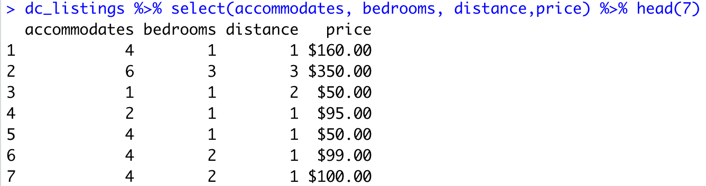
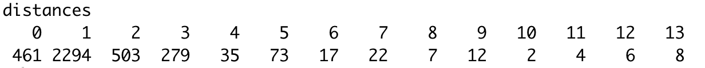

Feature selection is the process of reducing the number of input variables when developing a model
It is desirable to reduce the number of input variables to both reduce the computational cost of modeling and improve the performance of the model
Now we need to think about the model: relationship
Think simpler
- Input / Target
- Independent / Dependent
- Sometimes, output is not necessary
These methods can be fast and effective, although the choice of statistical measures depends on the data type of both the input and output variables
What are the potential costs
when you have a large number of variables?
- Slow the development and training of models
- Require a large amount of system memory
- The performance of some models can degrade
- Consider OLS
- more features would increase the explantory power on the outcome
- however, effect of individual estimates would be poorer
- You have experienced feature selections
- Conceptually, two frameworks
- Remove redundant variables
- Remove irrelevant variables
- Consider the following situations
- You have birth year and age variables separately
- What if they are not equal?
- How about the work experience?
- conditioned on the level of education, age and work expereince would be highly correlated
- The problem of unsupervised selection is how to handle similar variables
- correlation matrix among the features are handy
- need to set a threshold
- Then, how do we determine the irrelevant variables?
- Depend on your question/task
- Ok, now I divide input/output variables. Correlation matrix?
- data type matters
- numeric value vs. categorical value
Ok then, what's the model?
Revisit: Airbnb
Predict a price for a single listing with three rooms
How should we determine a good price for our listing?
- we looked at the neighbors to determine our rate
- use Euclidean distance to determine the distance
- $d = \sqrt{(x_1 - x_2)^2 + (y_1 - y_2)^2}$
- use the accommodates column to create a new distance column for our hypothetical rental listing with three rooms
dc_listings <- read.csv('dc_airbnb.csv')
our_acc_value <- 3
dc_listings <- dc_listings %>%
mutate(
distance = abs(accommodates - our_acc_value)
)

- Since rental pricing can depend on many factors other than the number of accommodations, the predicted price we get won't be very useful
distances <- pull(dc_listings, distance)
table(distances)

- discovered a problem when there are many more closest neighbors than we need
- Use randomization to pick from these exact matches
- We currently have no way of knowing if this prediction was good or not
- Learn how to evaluate the performance of our algorithm
- apply to feature selection
- Define what we mean by performance, and then look at how to calculate metrics to judge whether the model is good or not
- Start learning an incredibly handy R library called caret
- We judge the performance of an algorithm by evalutating how well it predicts the outcomes of data it hasn't seen before
- different to the concept of $R^2$
- We can think of an algorithm as a function that takes in data and outputs predictions
- If we feed in data that the algorithm hasn't seen yet, we can get predictions and then compare them to the actual outcomes contained in the data
- This process is called holdout validation
- it is a form of cross-validation, which is the more general name for evaluating model performance
Introduction to caret
- We have learned about train/test validation process
- apply it to the feature selection
- The word caret is actually an acronym, short for Classification And REgression Training
- In our case, the k-nearest neighbors algorithm is attempting to predict a good rental price, so is a form of regression problem
- As we've mentioned before caret streamlines the process of holdout validation, and it is capable of much more
Split a dataset into two separate sets
- Training set which contains the majority of the data
- Test set which contains the rest of the data we will use to validate the model
- caret has a function that helps us with the first step
- createDataPartition() function
train_indices <- createDataPartition(y = data[["price"]],
p = 0.8,
list = FALSE)
- y is the variable of interest that we want to split
- p describes a proportion between [0,1]
- by specifying list = FALSE, return a vector of indies
Setting Up For Training
- Now that we have our training set and test set, we need to train the algorithm and evaluate it against the test set
- What does it mean?
- Consider OLS setting
- You have data $(Y,X)$, uncover $Y=\beta X+ \epsilon$
- Split $(Y,X)$ into $(Y_1,X_1)$ and $(Y_2,X_2)$
- Train the algorithm to find out $\beta$ using $(Y_1,X_1)$
- Performance would depend on $Y_2 - \hat{\beta_1}X_2$
- Now that we have our training set and test set, we need to train the algorithm and evaluate it against the test set
- Holdout validation is actually one of many ways to do validation
- caret conveniently provides us with a function to set these parameters for the validation process before we start training
- This function is trainControl()
train_control <- trainControl(method = "none")
The method = "none" argument here specifies that we don't want to do any special resampling or multiple-fold validation with our algorithm
- In terms of the k-nearest neighbors algorithm, the rows of the training set become the neighbors that we use to predict the prices of the data from the test set
- caret provides us with another function for training machine learning models: train()
- Whereas trainControl() is where we specify how the training will be done, the train() function is where we actually specify the algorithm we want to use and what data the algorithm should use for training
train_control <- trainControl(method = "none")
knn_model <- train(outcome ~ predictor1 + predictor2,
data = training_data,
method = "knn",
trControl = train_control)
- The output of the train() function is a list that essentially contains the trained machine learning model
- By "training an algorithm", we really mean that the rows of the training data will be used as the neighbors for new listings we want to predict the prices for
- Now for each listing in the test set, we will calculate the average price of its nearest neighbors
- These prices become the model's predictions
With the model on hand, we can use caret's predict() function to predict the listing prices of the test data
predictions <- predict(knn_model, newdata = test_data)
- We need to provide two things to the predict() function to produce the predictions
- The first argument is our trained k-nearest that we are trying to evaluate
- The second argument is newdata, which contains the data we want to produce the predictions for
- Now, compare these predictions against the actual values of the listings as given in the price column
- We typically quantify this in terms of error
- If the predicted price closely matches the actual price, then the error will be small
- Conversely, if the predicted price is nowhere near the actual price, then we would see a large error
- Using the results, we can actually create a new column in the test set that captures the error for each listing
test_predictions <- predict(knn_model, newdata = test_listings)
test_listings <- test_listings %>%
mutate(error = actual_price - test_predictions)
Summarizing Errors Into a Single Metric
- We have an error column that describes the errors of each listing
- but we also have almost 1,000 individual errors
- we would prefer to have a single summary value that describes model performance
- There are many types of error metrics, but for this lesson we'll focus on one metric: the root mean squared error (RMSE)
- $$RMSE = \sqrt{\frac{\sum_{i=1}^{n}(\hat{y}_i -y_i)^2 }{n}}$$
- Squaring the differences helps us convert all of the error into a positive value
- Each difference is squared, and then we calculate at the mean, or average, squared difference
- Recall that the mean is useful for summarizing numerical data
- Let's do some exercise